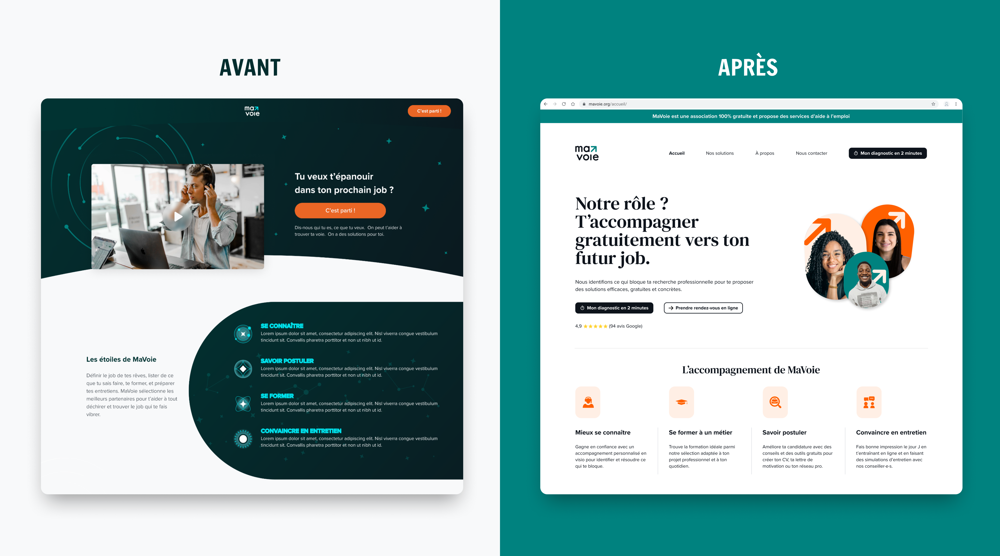
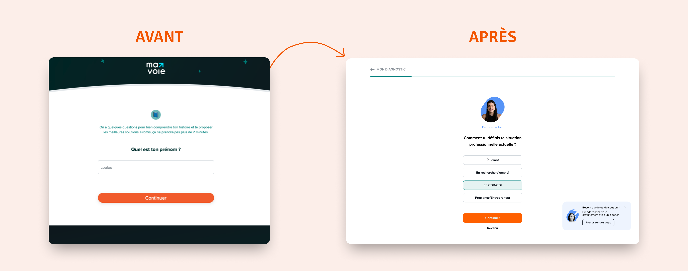
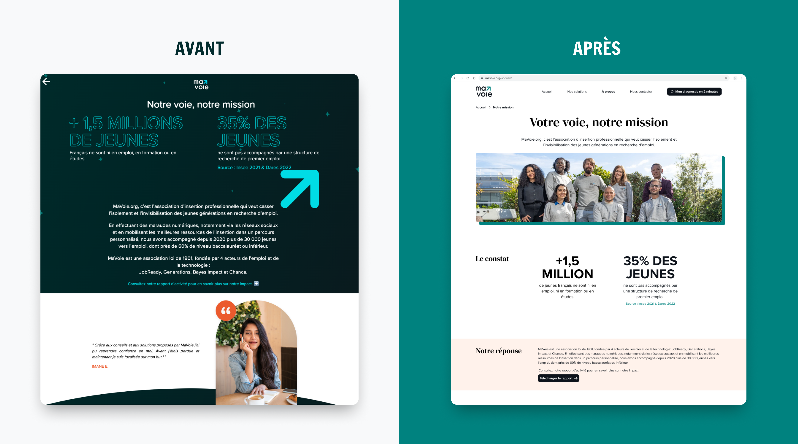
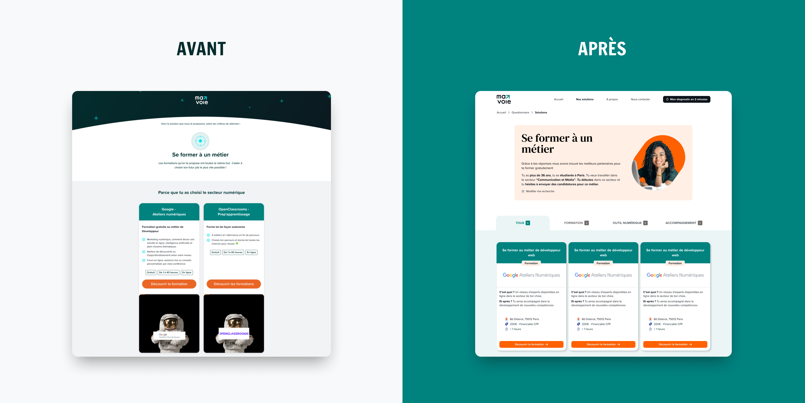
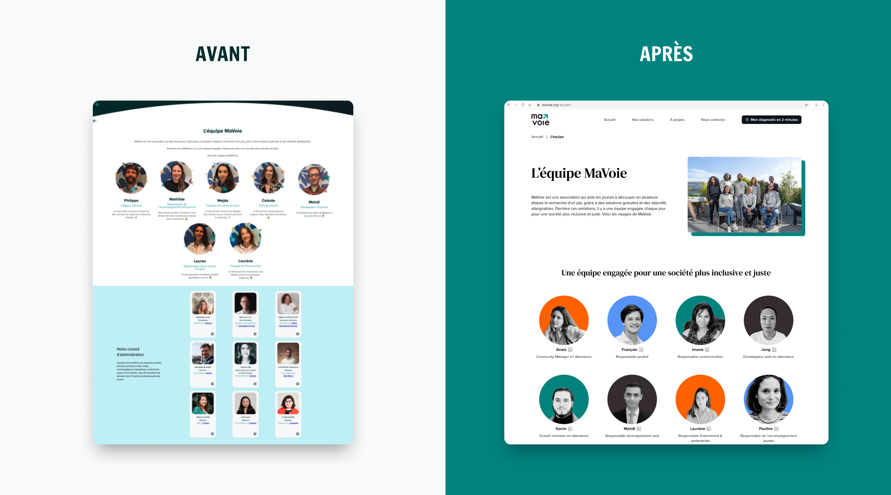

Spotify
Nouvelle fonctionnalité:
retrouver les chansons samplées
Il s'agit d'un projet personnel basé sur l'UI de l'app.
Étant une utilisatrice quotidienne de Spotify, j'ai toujours
voulu une fonctionnalité dédiée aux amoureux de la musique.
Voici la présentation d'une interface repensée pour les amateurs
de chansons avec une fonctionnalité centrée sur les chansons samplées
et leurs originaux.

Réalisations
Provide a brief overview of the project, including the context and objectives.
Outils
Describe the problem you aimed to solve with this project.
Aperçu du site
Outline the research methods used (e.g., user interviews, surveys) and summarize key findings.
Page d'accueil
Questionnaire
Page mission
Page formations
Page équipe
